홈 › 볼라드
볼라드 설치 비용과 방법
실제 현장 15곳
아파트 보행로에 오토바이가 들어오거나, 상가 앞 인도에 차가 올라오거나, 주차장 기둥 앞 볼라드가 부러졌을 때 맡기시는 작업이에요. 관리사무소, 상가 관리단, 건물주분들이 많이 의뢰하세요.
볼라드 비용이 달라지는 요인
- 종류U자형, 라운드형, 일자형, 이동식·브라켓형에 따라 자재와 고정 방법이 달라요.
- 바닥보도블록, 콘크리트, 아스팔트 중 무엇인지에 따라 타공과 매립 방식이 바뀌어요.
- 개수와 위치한두 개인지, 입구 여러 곳인지에 따라 작업 범위가 달라요.
- 기존 시설 철거부러진 볼라드나 규제봉을 빼내고 다시 세우는 작업이 더해질 수 있어요.
입구 전체 사진과 원하는 위치를 보내주시면 전화로 안내드려요.
지역별 볼라드·규제봉 현장
 동탄 오토바이 진입금지 매립 볼라드 설치 기준동탄
동탄 오토바이 진입금지 매립 볼라드 설치 기준동탄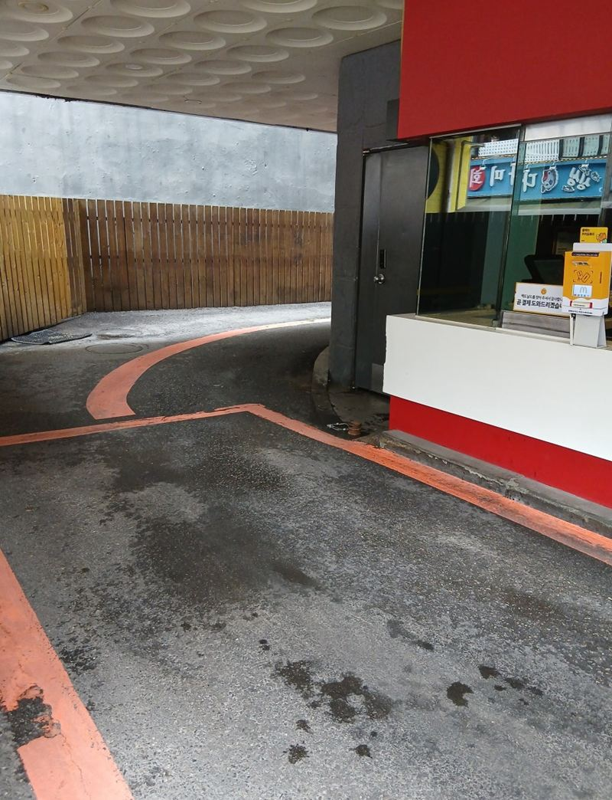
부천 볼라드 설치 비용과 종류부천 분당 도로 규제봉 앙카볼트 교체 방법분당
분당 도로 규제봉 앙카볼트 교체 방법분당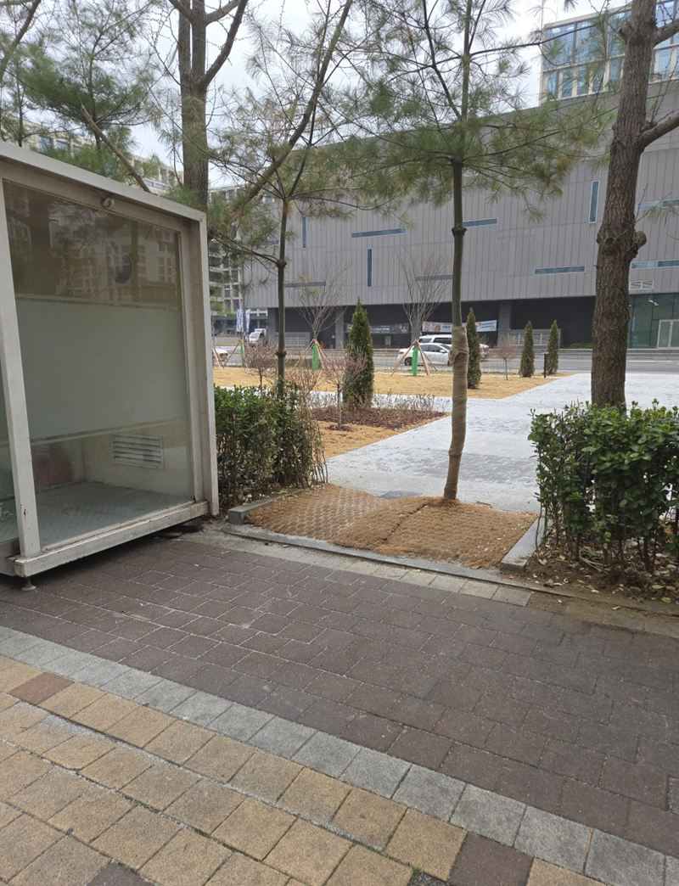
천안 오토바이 출입금지 라운드 볼라드 설치천안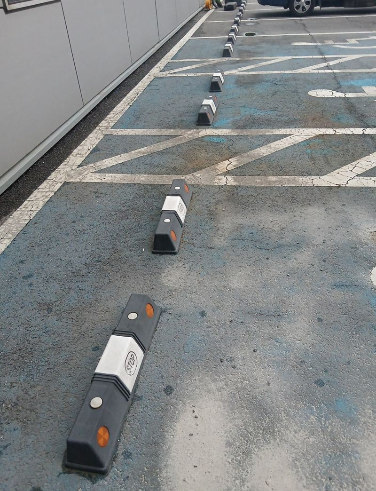
군포 주차 카스토퍼 설치 비용과 주의사항군포 관악 오토바이 진입금지 구조물 설치 방법서울 관악
관악 오토바이 진입금지 구조물 설치 방법서울 관악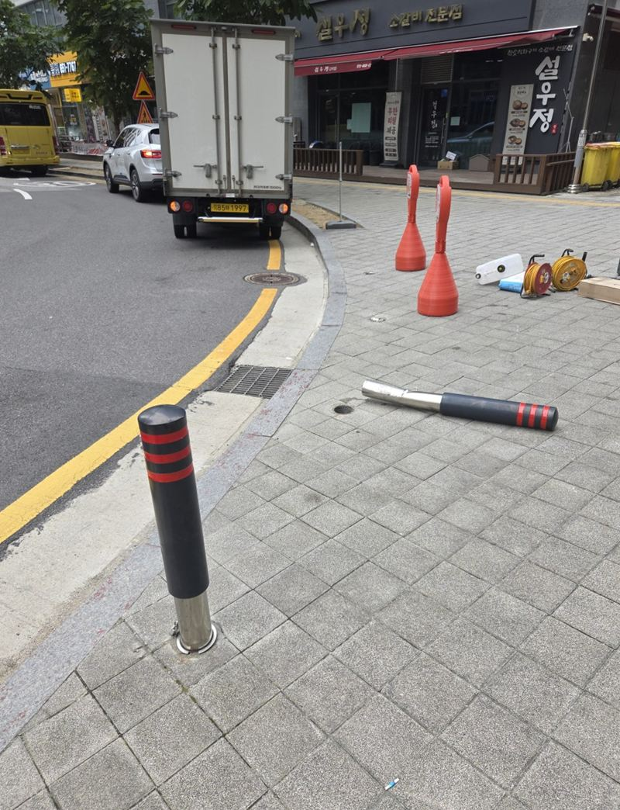
평택 매립 볼라드 파손 시 철거·재시공 방법평택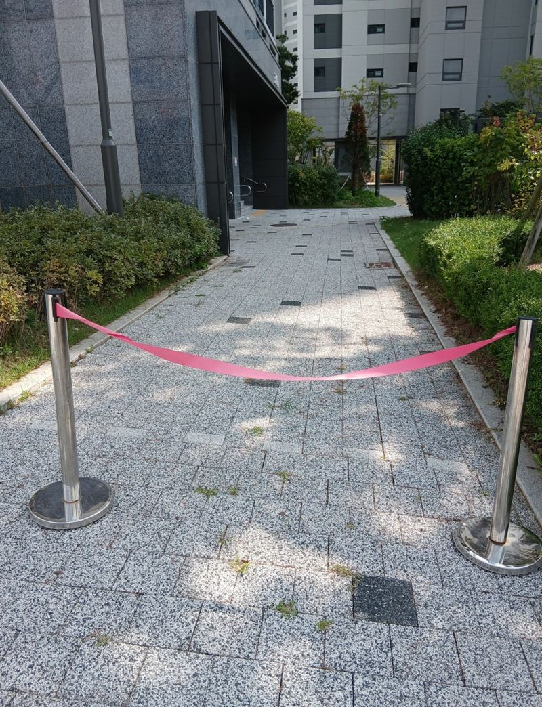
평택 보도블럭 볼라드 매립 깊이와 시공 방법평택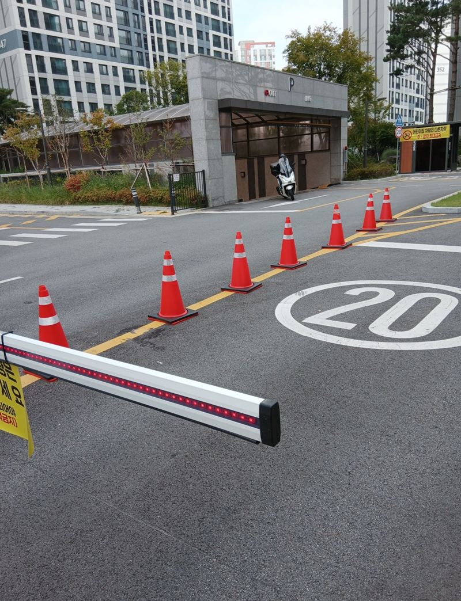
평택 아파트 차선 규제봉 파손 교체 방법평택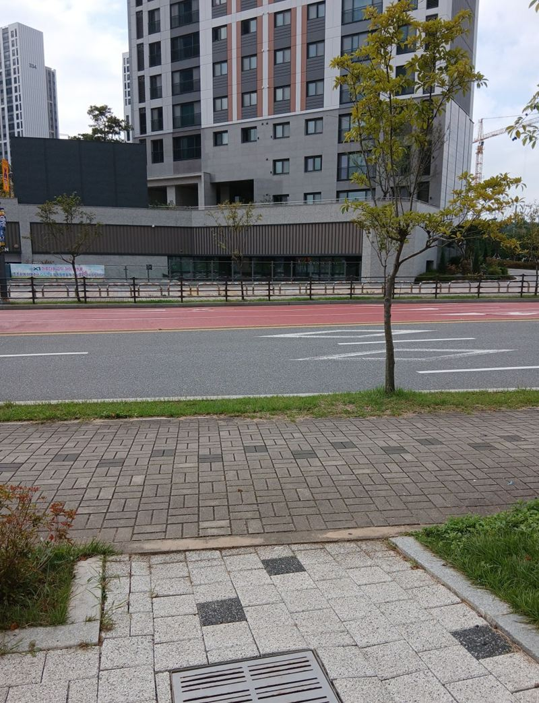
평택 이동형 브라켓 매립식 볼라드 설치 비용평택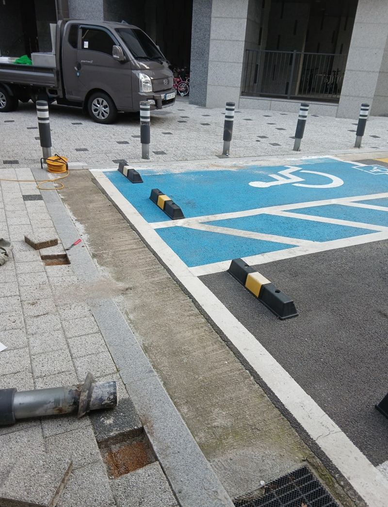
평택 일자형 볼라드 고리 연결로 출입 막는 방법평택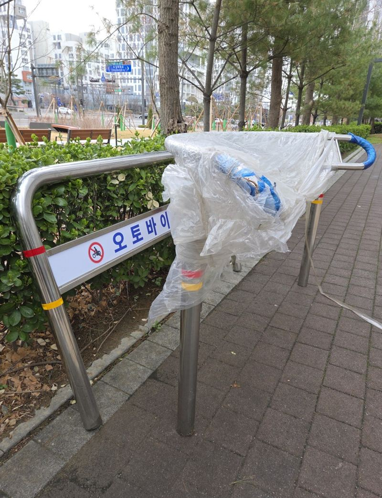
시흥 아파트 보도블럭 타공 후 볼라드 앙카 설치시흥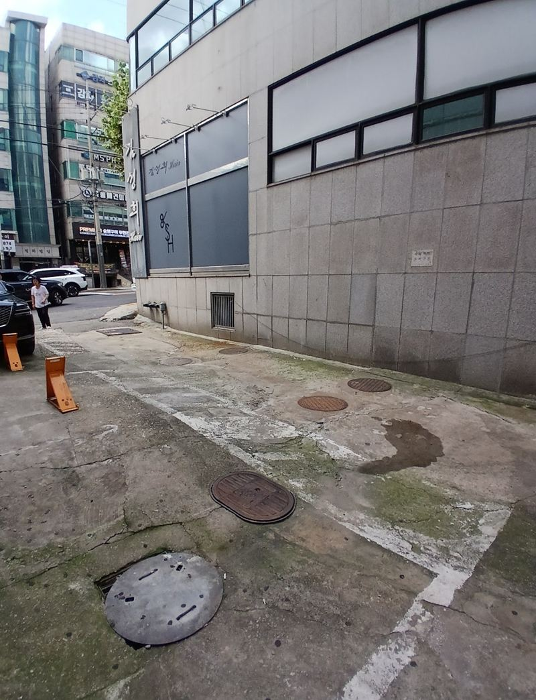
양천 주차 진입금지 U자 볼라드 설치 목적과 방법서울 양천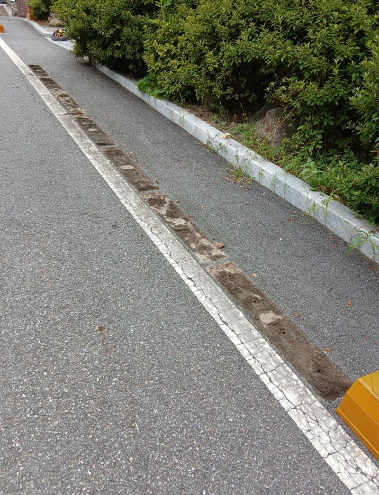
양평 도로 안전봉 설치·교체 작업 방법양평 용산 스텐 U자 볼라드 한두 개 설치 작업서울 용산
용산 스텐 U자 볼라드 한두 개 설치 작업서울 용산
볼라드 설치 전에 많이 물어보세요
관리사무소 승인이 필요한가요?
공용 공간에 세우는 시설이라 대부분 관리 주체의 결정이 필요해요. 의뢰하시는 분이 미리 확인해 주세요.
차가 가끔 드나들어야 하는 곳도 막을 수 있나요?
필요할 때 뺄 수 있는 이동식이나 브라켓형 볼라드를 함께 검토해요. 평택 현장에 이런 사례가 있어요.
막고 싶은 입구 사진과 바닥 재질을 알려주시면 상담해 드려요.
전화 상담 010-4517-9872